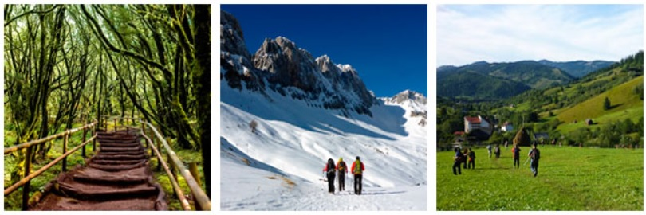
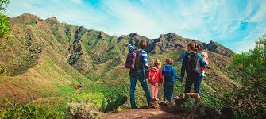
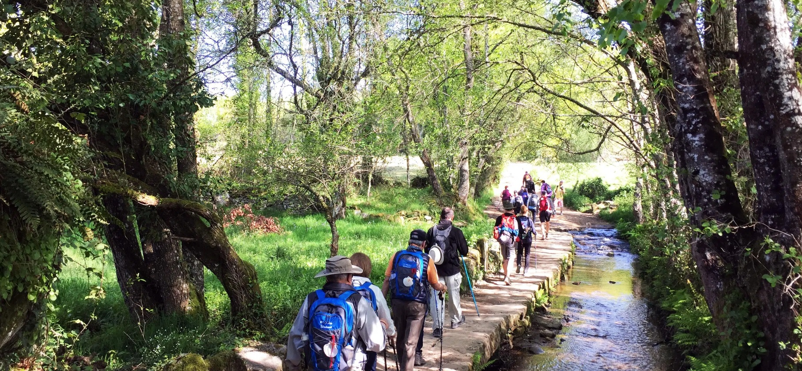
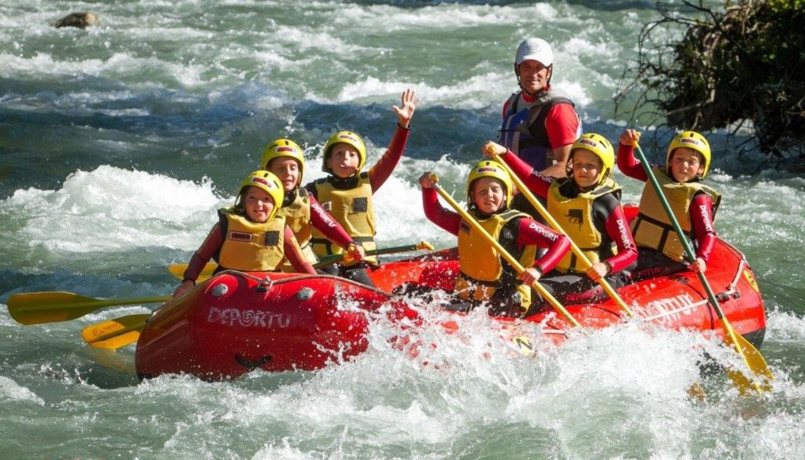
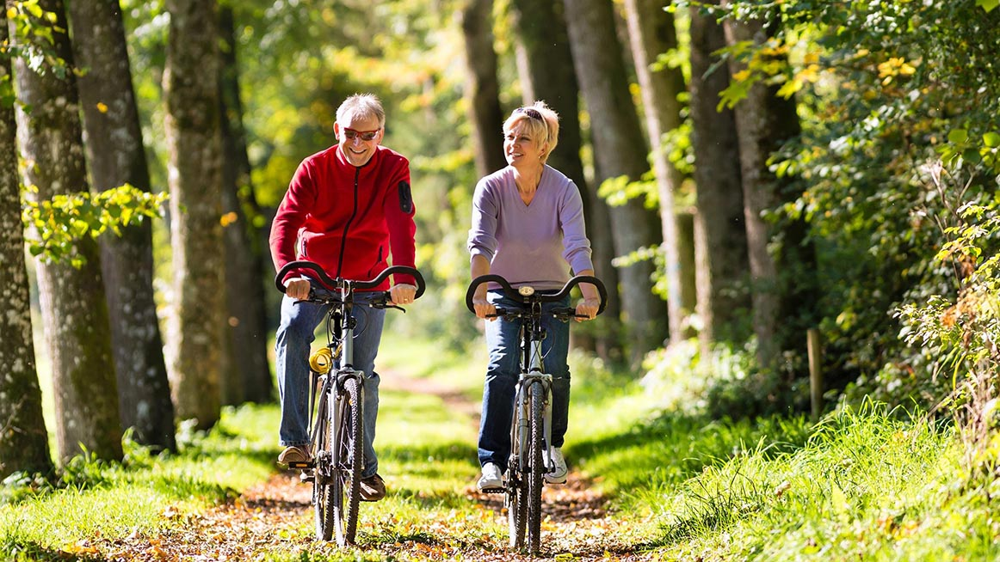

|


En este apartado podrás decidir el tipo de viaje que estás buscando.
Recuerda que siempre estaremos ofreciendo lo mejor en salidas a la naturaleza.
¡Elige cómo y con quién quieres tener tu próxima aventura!

¡Viaja en familia!

Hay muchas opciones para sentir la naturaleza en familia y crear bonitos recuerdos juntos.
En Traveleando ofrecemos distintas opciones para que disfrutar de la naturaleza en familia se convierta en una experiencia irrepetible que sirva para uniros más, para ampliar conocimientos, sentir emociones intensas; para relajarse, cuidar cuerpo y mente y por supuesto para que todos y cada uno de los miembros familiares se sientan a gusto y felices durante sus vacaciones.
Una experiencia en grupo

Si por el contrario lo que buscas es un viaje para tu grupo de amigos, tu asociación o tu empresa, te ofrecemos la posibilidad de diseñarte un viaje para vosotros. Ponemos nuestra experiencia viajera a vuestra disposición para crear un viaje que se ajuste a vosotros en duración, destino y nivel.
Así que...¿Os gustaría respirar libremente aire puro, daros un refrescante chapuzón en plena naturaleza, recorrer nuevos lugares y disfrutar de las vistas a tu ritmo? Este es el lugar adecuado, en compañía de expertos y expertas apasionados, comprometidos con la protección de las especies.
Todo para un viaje de estudios

Los viajes de estudios en la naturaleza se basan en uno de los elementos más valorados en la pedagogía actual: el aprendizaje vivencial.
Este consiste en vivir en primera persona y desde la experiencia práctica aquello que se trata de transmitir en muchas ocasiones desde una formulación teórica. En los viajes de de estudios, son los propios participantes los que juegan, experimentan, interaccionan, tienen conflictos y desarrollan dinámicas. Como en la vida real.
Sin embargo, tienen la ventaja de que lo hacen rodeados por todos los elementos que forman su vida de aprendizaje formal: sus compañeros de clase, algunos de sus profesores. Es por ello que es tan importante y profunda la huella que dejan los viajes de estudios. Esta no tiene que limitarse únicamente a lo divertido o la aventura vivida durante el viaje, sino también a lo aprendido.
Si estás jubilado, aquí está tu mejor opción

Una vez entramos en la etapa de ser jubilados o pensionistas sabemos que tenemos todo el tiempo del mundo para hacer aquello que nunca hicimos. ¿Qué mejor que conocer el mundo?
Ser jubilado y pensionista tiene muchas ventajas en cuanto a viajar y conocer el mundo. Podrás disfrutar de las mejores ofertas en circuitos culturales y promociones en viajes para jubilados por España, Europa y pensionistas todo incluido.
Sabemos que ya te has preocupado bastante por llevar tu vida y la de los que te rodean adelante. Por ello, queremos que no te preocupes más.

Web realizada por:Yohanna Gelo
Copyright 2022 Traveleando - Agencia de viajes